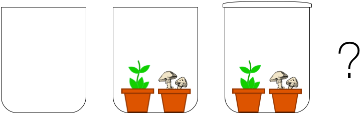

Thought experiment. Put a plant in a glass jar. Seal the jar. How long do we give the plant to live? Spoiler: A big short. Rinse the jar, repeat with an ant, a fungus, etc. How long do they live?
This thought experiment ends the same way for any living organism: Plants, insects, fungi, bacteria, even Homo Sapiens. The exact reason depends on the species, as plants strive on CO\(_{2}\), fungi and Humans need oxygen, some bacteria require extreme heat. A common pattern is that all organisms' life depends on some environment composition.
When we put the plant in the seal jar, we set the environment to glass and some air. No nutrient, no water, no air flow. The plant needs its environment to cater for nutrient, water and air. As we change this assumption, the plant quickly decays to its very end.
Another thought experiment. Put a plant in a glass jar. Add fungi. Seal the jar. How long to they live then? Quite longer: Plants get CO\(_{2}\) and release oxygen. Fungi get the oxygen to give back CO\(_{2}\). We have a deal.
Plant and fungi often team up well to strive and survive. The team is stronger, although it must still face challenges as the glass jar environment still lacks nutrients and water.
Organisms team up for life in their environment. We Humans work together for a better good, while we "team up" with plants and fungi to cater for some of each other's needs.
Earth is Humanity's resourceful jar. Yet the resources can cater for so many of us. We believe we can better use these resources, and search for more beyond the edge of our planet.

Cosmos X aims at supporting life in every environment.
We develop technologies to:
Version Summer 2017
Images composed with cliparts from cliparts.co